Dissociation of strong acids
Strong acids are assumed to disassociate 100% unless stated/indicated otherwise
Weak acids disassociate less
Strong acids:
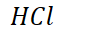{width="1.125in" height="0.3333333333333333in"}
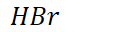{width="1.1770833333333333in" height="0.3333333333333333in"}
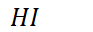{width="0.96875in" height="0.3333333333333333in"}
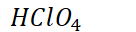{width="1.4166666666666667in" height="0.3333333333333333in"}
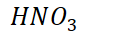{width="1.375in" height="0.3333333333333333in"}
{width="2.5104166666666665in" height="0.3541666666666667in"}
{width="6.229166666666667in" height="0.3541666666666667in"}
Disassociation of strong acids is a forward-only reaction, so stoichiometry can be used
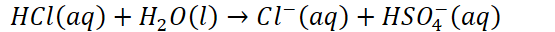{width="5.78125in" height="0.3333333333333333in"}
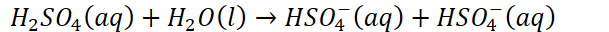{width="6.34375in" height="0.3333333333333333in"}
Disassociation of weak acids is reversible, so equilibrium must be used
Using a before-shift-after chart:
| 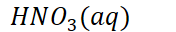{width="1.8333333333333333in" height="0.3333333333333333in"} | 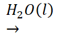{width="1.0104166666666667in" height="0.6666666666666666in"} | 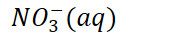{width="1.7604166666666667in" height="0.34375in"} | 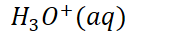{width="1.8645833333333333in" height="0.3333333333333333in"} | |
|---|---|---|---|---|
| Before | 5.992 * 10^-3^ M | 0 | 0 | |
| Shift | -5.992 * 10^-3^ M | +1(5.992 * 10^-3^ )M | +1(5.992 * 10^-3^) M | |
| After | 0 | 5.992 * 10^-3^ M | 5.992 * 10^-3^ M |
Disassociation of strong bases
Strong bases are assumed to disassociate 100% unless clearly indicated (or given a K value)
Strong bases:
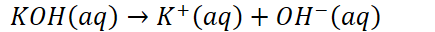{width="4.53125in" height="0.3333333333333333in"}
{width="7.21875in" height="0.5104166666666666in"}
{width="4.9375in" height="0.3541666666666667in"}
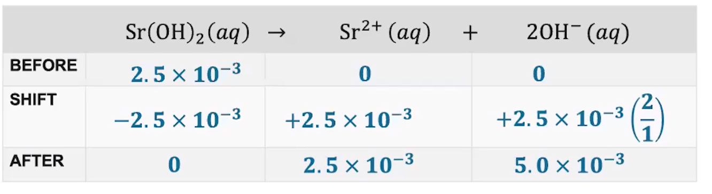{width="9.25in" height="2.5208333333333335in"}